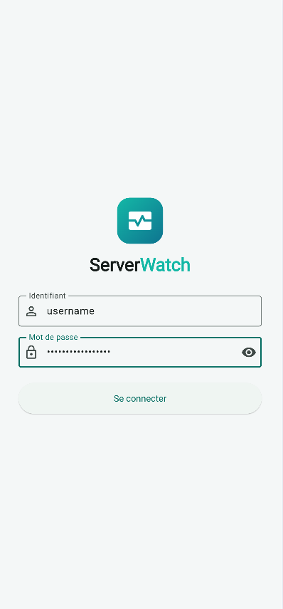
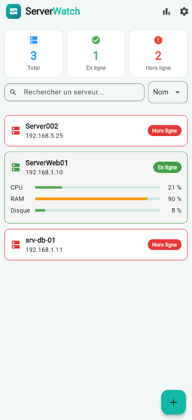
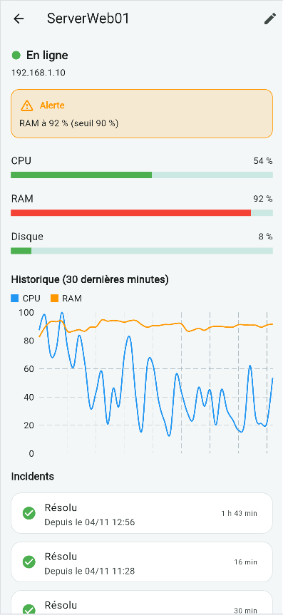
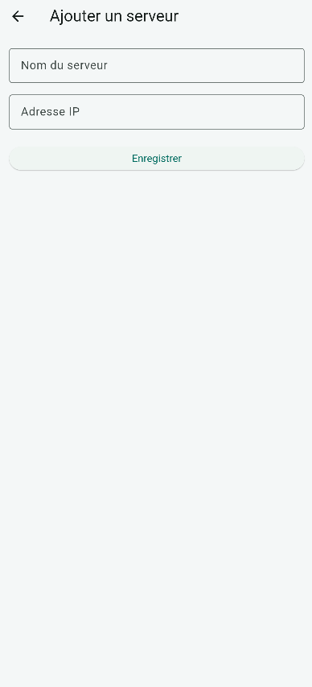
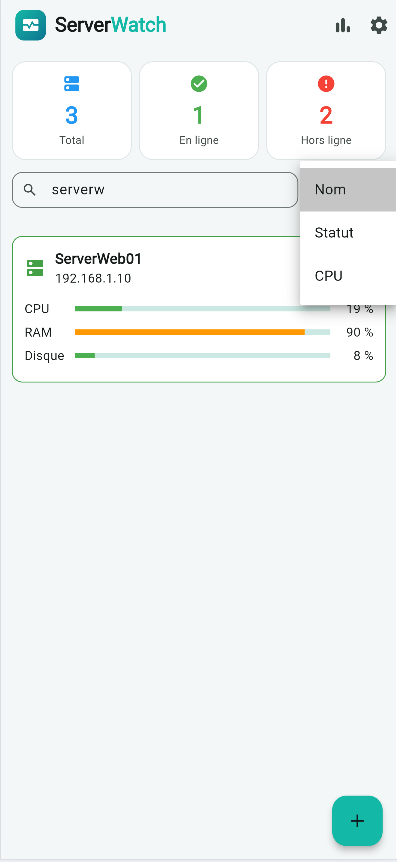
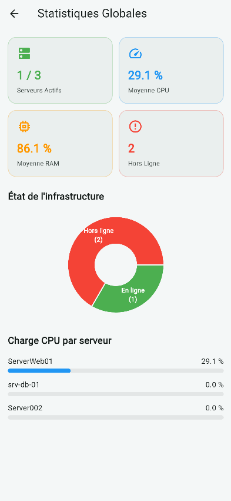
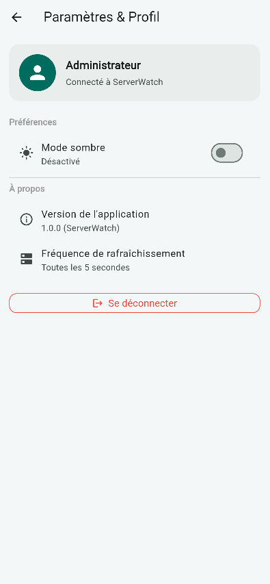
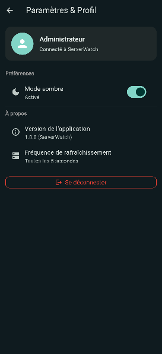

Application mobile de supervision de serveurs : état, consommation de CPU, de RAM et de disque, historique et incidents. Flutter côté application, FastAPI et PostgreSQL côté serveur, avec un agent de mesure en Python.







